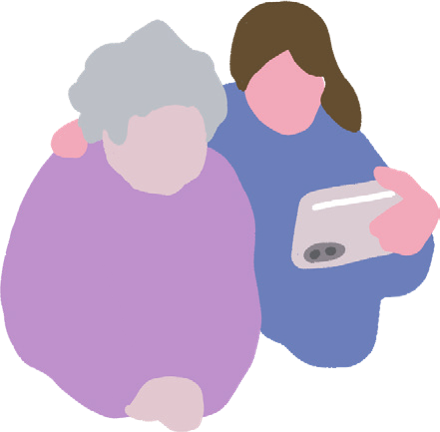
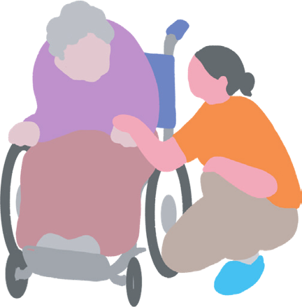
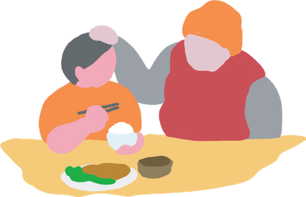
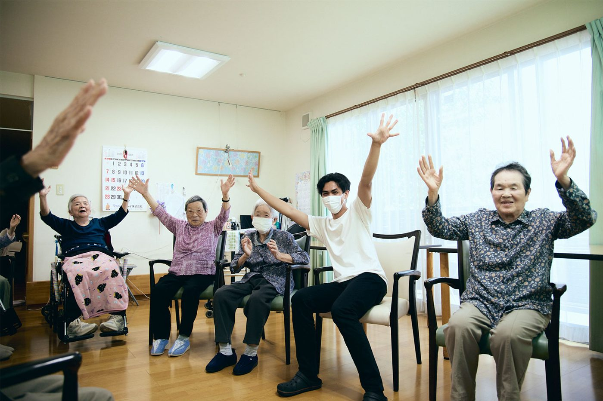
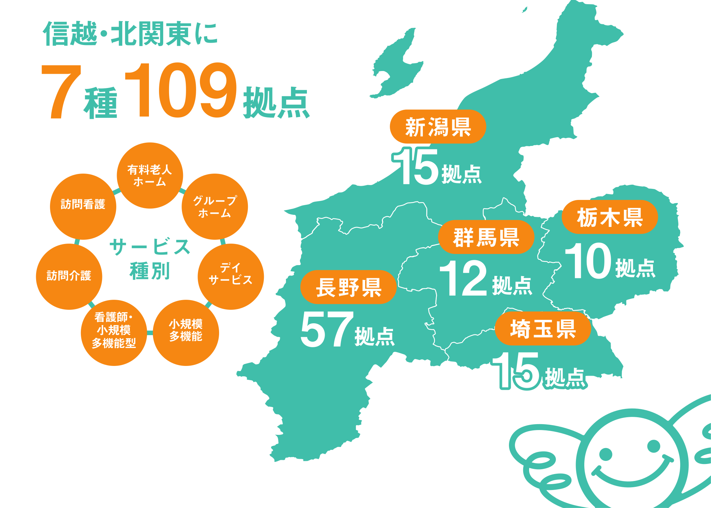
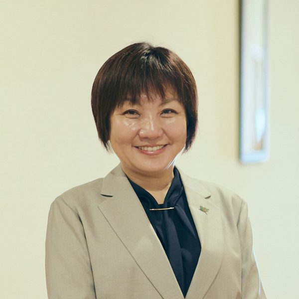

介護や老後の話は、なんだか暗い。
そんなイメージを、一緒にひっくり返したい。
まるでお祭りの準備のように、
それぞれができることを「持ち寄る」ことで、
ひとつのコミュニティが生まれていく。
日本一長寿の県・長野から、
最高に楽しい仕事を体験してみませんか。
＜エフビー流の学び＞
利用者さんの人生にふれる
職員の仕事を観察する
できることから体験する
気づきから、キャリアを考える
※ 文章は仮です。決まり次第、本物の内容に差し替えます。
はじめてでも安心して参加できるように、4つのステップで進めます。
フォームから、行きたい日と事業所を選んで申込。質問だけでも大丈夫です。

持ち物や服装、当日の集合場所をお知らせします。
職員がそばでサポートします。利用者さんとおしゃべりしながら、現場を体験。

感じたことや気づいたことを、職員と話し合います。

実習の様子を動画で紹介します。

紹介動画は準備中です（仮の画像）不安や興味のあるキーワードを選んでください。
日本一長寿の県・長野から。信越・北関東に7種109拠点があります。

社長に聞いた、これからのまちのカタチ。外部サイト「visions」の記事が開きます。
